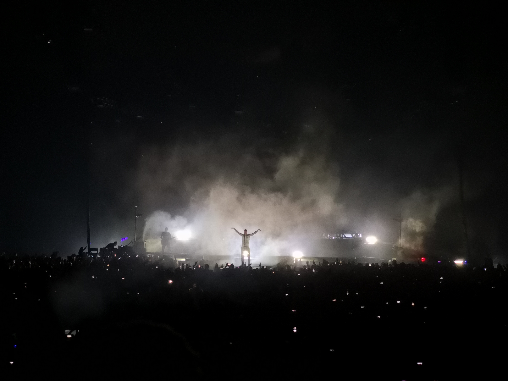

Mein Soundtrack fürs Leben 🎧
Hier dreht sich alles um meine musikalische Welt – von persönlichen Playlists über Lieblingskünstler bis hin zu den nächsten Konzerten, die ich live erleben werde.
Indie

Metalcore
Womit alles begann
Die Ärzte

Die Musik der Punk-Band "Die Ärzte" war die erste, die ich aktiv angefangen habe zu hören. Bis heute haben mich die Songs der Ärzte geprägt und inspiriert. Besonders der Song "Schrei nach Liebe", welcher sich gegen Hass und Intoleranz richtet, hat mich früh dafür sensibilisiert, nicht wegzusehen, wenn andere ausgegrenzt werden, und meine Stimme zu erheben, wenn Unrecht geschieht. Auch "Junge" hat mich nachhaltig beeinflusst. Dieses Lied spricht das Spannungsfeld zwischen gesellschaftlichen Erwartungen und dem eigenen Lebensweg an. Es hat mir geholfen mit äußeren Erwartungen umzugehen und selbstbewusster meinen eigenen Weg zu gehen, auch wenn nicht alle damit einverstanden sind.
| Band/Festival | Ort | Datum |
|---|---|---|
| Rock am Ring | Nürburgring | 06.06.2025 - 08.06.2025 |
| Linkin Park & Architects | Düsseldorf | 01.07.2025 |